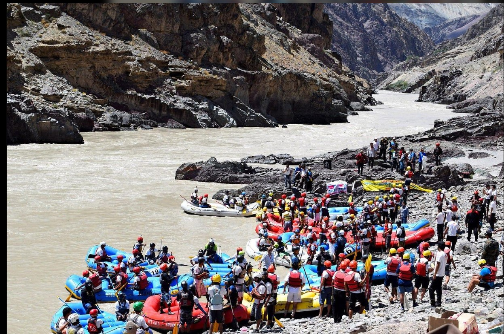
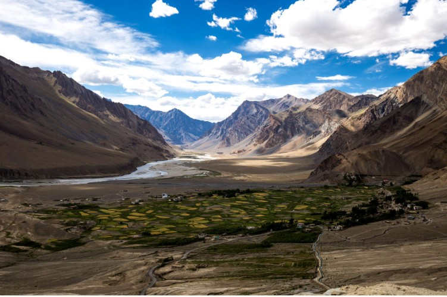
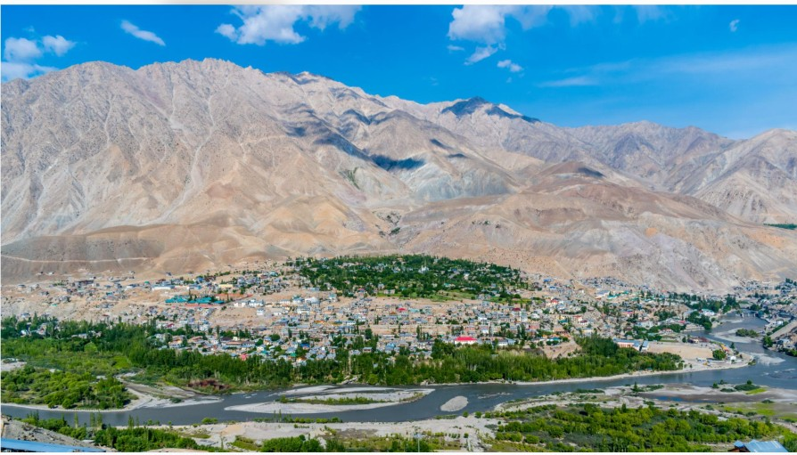
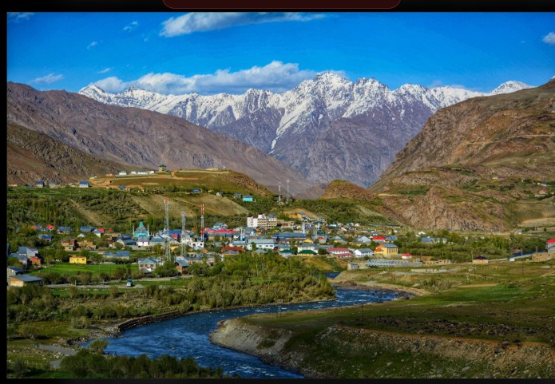
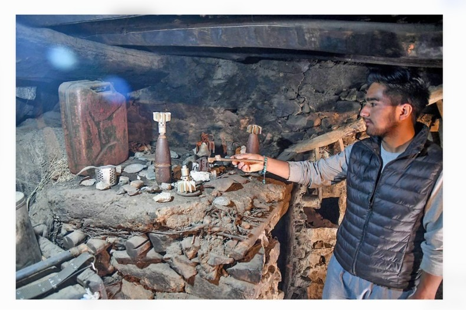
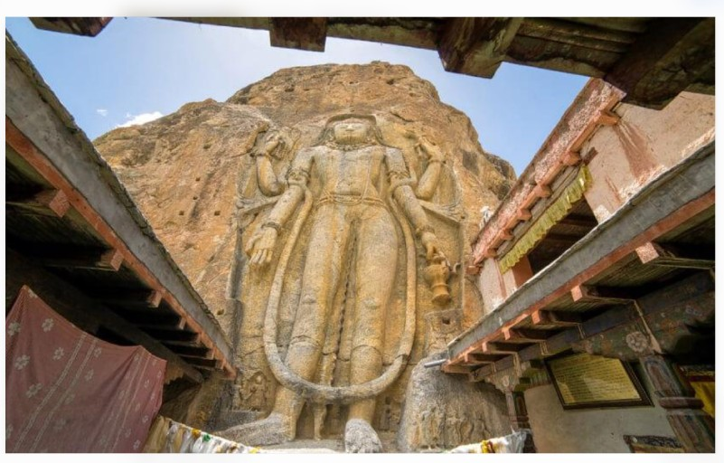
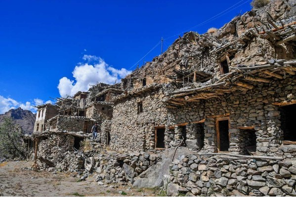
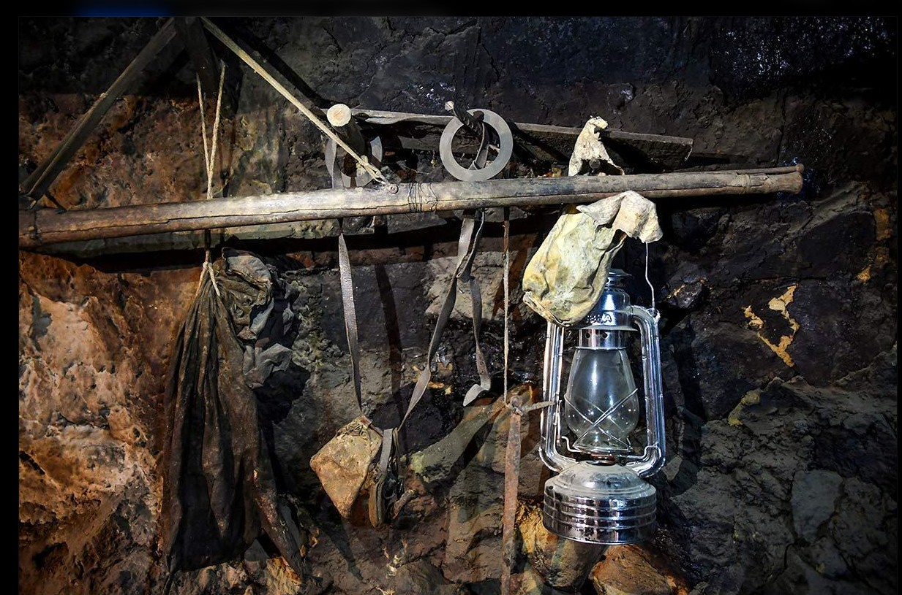

Hidden Destinations
Discover places beyond the usual tourist routes.
Explore hidden valleys, ancient heritage, historic villages and the unforgettable stories of Kargil- Ladakh.
Explore Ladakh ↗Ladakh is more than mountains and beautiful landscapes. It is a land of diverse cultures, historic settlements, remarkable people and stories passed down through generations. Our goal is to bring these places and stories into the spotlight.
Discover places beyond the usual tourist routes.
Explore traditions, historic settlements and cultural landmarks.
Understand the history of border communities and their resilience.
From peaceful valleys to remote Himalayan settlements, every destination offers a different experience.

01A peaceful valley surrounded by mountain scenery.Worlds 53 rank on tourism spot

02Remote landscapes and distinctive cultural traditions.

03A historic town at the heart of the western Himalayas.

04Mountain beauty and an important chapter of modern history.

05A border village where history remains visible.
Explore the cultural and historical landmarks that contribute to Ladakh's distinctive identity.

Discover a cultural landmark associated with the Buddhist heritage and diverse traditions of the region.

Explore the historical accounts and local traditions associated with Kargil's royal past.
### Rgyal Khatoon Park & Karchay Khar Discover the legacy of Rgyal Khatoon, remembered in the royal history of the Suru–Karchay region. Visit Rgyal Khatoon Park in Kargil, named in her honour, and explore the historical remains of Karchay Khar, associated with the former Karchay kingdom. Together, these places offer a glimpse into the region’s royal heritage, historical traditions, and the story of Khree Mohammad Sultan Cho.
Located near the Line of Control in the Kargil region, Hunderman is a village with a remarkable history of borders, conflict, separation and community life.
Before the 1971 India-Pakistan War, the village was under Pakistani control. During the 1971 conflict, Indian forces took control of the area. The change left a lasting mark on the village and the lives of families connected to it.
The old settlement preserves traces of an earlier way of life. Its narrow paths, traditional stone houses and historic surroundings offer visitors a glimpse into the past.
Discover the Museum ↗Hunderman's Museum of Memories offers a glimpse into the lives of people who experienced changing borders and decades of uncertainty.


Personal records and written materials can help explain the experiences of families living through historical change.
Household items and possessions offer insight into the daily lives and traditions of earlier generations.
Historical military objects and remnants, where displayed by the museum, help visitors understand the region's conflict-era history.
Museum displays may change. Confirm the current collection locally before describing any specific weapon or military item as part of the 1971 war.
The partition of British India and the ensuing conflict reshaped control and communities across parts of the former princely state of Jammu and Kashmir.
During the 1971 India-Pakistan War, Indian forces took control of Hunderman. The village's history reflects the effects of changing borders on local life.
The Kargil conflict became a major chapter in the modern history of the region, with the Drass War Memorial now honouring the Indian soldiers who fought.
Every valley, village and landmark carries a piece of history worth preserving and sharing.
Back to Top ↑